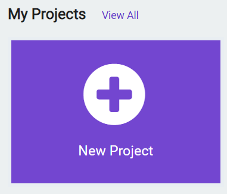
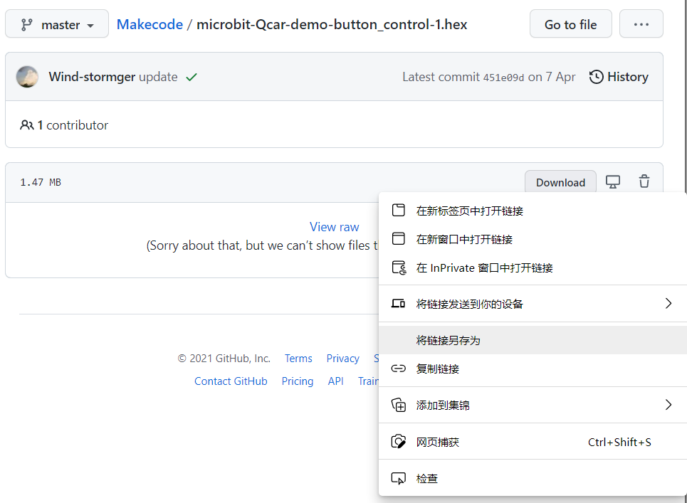

创建MakeCode项目
1.打开网页链接：
2.可以选择点击网页右上角的齿轮图标，再点击Language即可切换简体中文。但此处还是建议尽量直接使用英文，MakeCode 中绝大部分积木名称都与由英文字符组成的程序代码中的各种基础语法单词相对应,这将有利于未来过渡到使用代码编程。

3.点击 New Projects 新建项目，随后给项目取个名字即可。

4.除了将项目保存为一个 .hex 文件，还可以作为一个Github项目保存，这需要准备一个Github账户，并与MakeCode关联登录。

5.后续所有例程提供的链接都是 .hex 文件的链接，下载它们不需要登录Github账户。在链接所打开的网页中，鼠标右键点击 Download 按钮，再点击 将链接另存为 即可将.hex文件下载至计算机本地硬盘中。
